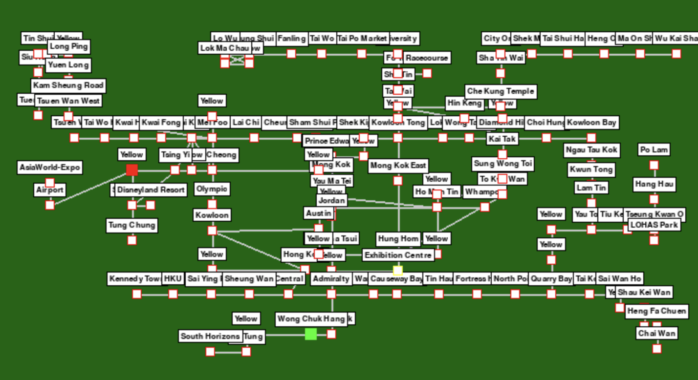

Lorye Go! Hong Kong under development in early stage.
Hype Coding a Hong Kong Dream:
Building Lorye Go! with AI
Published on March 26, 2025 by Entz Yeung
From Imagination to Action: AI as My Wings
I am a data scientist and AI engineer. I’ve been coding in Python for over 10 years, mostly data science, machine learning engineering and AI engineering. Pygame? I’d heard of it, played with basic rectangles and circles once or twice, but never dared to dream of building a full-fledged game. The threshold was too high. I was not worried about the learning curve, all i worried was the massive amount of hours i have to pour into it.
I wanted to create something fun, something that resonated with Hong Kongers - like a legacy for the young generation. But my imagination outpaced my skills. The map layouts, the animations, the game logic, game coding — it all felt like climbing whatever mountain without gears.
I have been a subscriber of multiple AI services. They are all very helpful if you have already had the domain knowledge of that area, then AI can give you a huge boost in efficiency. However, if you are a total noob in an area, then AI can not be too help. But then came Grok 3 (Heard good story about Gemini 2.5 Pro recently, I would really love to jump into it and try it out). With Grok 3 as my co-pilot, hype coding flipped the script. Suddenly, I wasn’t just fantasizing about Lorye Go! Hong Kong Edition — I was building it. In 4 weeks, not years, I had a working prototype: players rolling dice, hopping between MTR stations, buying properties, and dodging seasonal events like typhoons and tram collaborations. Without AI, I’d still be staring at a blank IDE, and feeling overwhelmed. With it, I finished something I never thought I could. As some developer put it (sorry I forgot where and who), “AI turns coders into wizards—point, wish, and watch the magic happen.” That’s exactly how it felt.
Half Human, Half Machine: The Collaboration
Grok 3 is brilliant, but it’s not a replacement for human ingenuity. This project was a 50/50 split. I brought the vision, the planning, the testing, the debugging; Grok handled the heavy lifting of general code generation. Think of it as the ultimate coding assistant — an engineer so competent I could just say, “Hey, make me a carousel HUD with 3D buttons,” and 70% of the time, it delivered exactly what I pictured. The other 30%? Well, AI makes mistakes. It hallucinates syntax, misinterprets intent, or churns out code that looks perfect but crashes spectacularly. That’s where I came in — running the game, spotting glitches (like trains teleporting off the map), and nudging Grok back on track.
AI not only helps visualize my mind map, but also makes my dream come true. The above is the game board after a day of tidy up manually.
Another big reason I kicked off this project was to see just how far vibe coding could take me. In the early proof-of-concept (POC) stage, Grok 3 was a revelation—it could almost nail what I wanted in one go. (I’ll share the text-based POC version of *Lorye Go!* later in my repo.) That alone blew me away. But the real test came when I moved to the 2D game board version.
One massive hurdle Grok 3 couldn’t clear was mapping the x and y coordinates of stations onto a 2D map. My first prompt was simple: “Give me rough x and y coordinates for the stations on a simplified map with plenty of resolution.” It flopped. So, I iterated—feeding Grok more details each time: station names, rough positions, their relationships, even narrowing it down to a small chunk of the map. Still, Grok 3 couldn’t deliver a decent list of station locations that made sense.
In the end, I charted it manually — a task that took days to complete. But when I stepped back, my map looked messy. So, I turned to Grok again: “Can you tidy this up? Align the stations neatly if they’re roughly in a straight line.” Even after refining the prompt multiple times, Grok failed to get it right. The stations stayed stubbornly out of whack.
Can AI replace humans? It could, but not in a year or two, no way. It’s a tool, not a brain. I’d pitch an idea — say, a question-and-answer system for trivia stations — and Grok would whip up a decent draft. But when a player’s cash went negative and the game didn’t handle debt properly, I had to step in, test it in real-time, and tweak the logic. AI doesn’t “feel” the game flow; it doesn’t catch the subtle bugs that only a human playing it can spot. Mr. Hossein Mohammadi echos this: his Linkedin post called AI “a genius intern who never sleeps, works lightning-fast, and occasionally gets things hilariously wrong”
The Art of Balance: Where AI Stumbles
Speaking of game flow, balancing is another area where AI struggles — and it’s not its fault. Balance is subjective, tied to human emotions and feelings. Should reaching a destination net you $500 or $1000? How often should seasonal events trigger — 10% or 20%? I asked Grok to tune these, but its suggestions were either too mechanical (flat percentages) or wildly off (a $10,000 prize that broke the economy). Even among humans, balance is debated endlessly — check any gaming forum, and you’ll see players arguing over what “feels right.” For Lorye Go!, I ended up tweaking events, probabilities and rewards myself, playing round after round to get that sweet spot where it’s challenging yet fun. AI can’t taste that magic yet.
The Index-Heavy Headache: A Human Touch
Then there’s the “index-heavy stuff” — tasks involving complex, structured data even though patterns are obvious. Take the map_layout from stations.py as an example. Each station is a dictionary with keys like "name", "x", "y", "connections", and "assets". Here’s a snippet:
map_layout = {
0: {"name": "Hong Kong", "line": "TCL", "connections": [25, 108], "x": 3516, "y": 3063, "type": "city", "assets": [...]},
1: {"name": "Kowloon", "line": "TCL", "connections": [2, 104, 106], "x": 2752, "y": 3063, "type": "city", "assets": [...]},
2: {"name": "Olympic", "line": "TCL", "connections": [1, 3], "x": 2952, "y": 3063, "type": "city", "assets": [...]},
...
}
I wanted stations aligned logically — say, spacing “Hong Kong”, "Kowloon” and “Olympics” evenly on a horizontal line. I told Grok, “These three are on the Tung Chung Line; space their x-coordinates evenly between 2752 and 3516, keeping y consistent.” Simple, right? Nope. Grok either miscalculated the intervals, ignored the y-alignment, or mixed up station IDs. With over 100 stations, the errors piled up fast—coordinates overlapped, connections broke, and the map looked like a toddler’s scribble.
Why? LLMs like Grok learn from patterns—text, syntax, logic flows. But this task is too heavily patterns-driven; it’s spatial and relational, with hundreds of overlapping and similar values. When I asked it to validate connections (e.g., ensure “Hong Kong” links to “Central” at index certain index), it’d miss half the checks or can't discern the old and new indices. I ended up doing it all manually — reconnecting and realigning stations, and verifying every link. For a handful of entries, AI might cope, but scale it to 10+ with nested data, and it’s a mess. This isn’t a knock on Grok — it’s just not built for that grind.
The Grind in Numbers
I kicked off this project around March 1st, diving in with full-on vibe-coding energy. Day and night, I was at it—logging at least 6 hours daily after work in the local government during the week and cranking it up to 18 hours on weekends. Not a single day off. The journey’s left its mark: 109 development scripts tracked and 950 log files piled up in my records. Even the animations, simple as they seem with just 3 frames each, took serious effort—averaging over 4 hours per set to get them just right.
Anyway A Love Letter Delivered
Despite the hiccups, Lorye Go! came to life. Players can now roll dice across a vibrant MTR map, buy properties like “FUNERAL HOME” and laugh at events like “King Rexy's invasion” (a nod to Hong Kong’s quirky chaos). It’s not perfect — balance still needs polish, and the map could use more finesse — but it’s mine, and it’s for Hong Kongers. Hype coding with Grok 3 gave me the push to start, the tools to build, and the confidence to finish.
Online, the hype coding crowd would call this a win: “You shipped it, that’s what counts,” one X post said. And I agree. AI lowered the barrier, but it was my passion — and hours of human grit — that got it over the line. So, to anyone dreaming big but hesitating: grab an AI, ride the hype, and start coding. You might just surprise yourself.